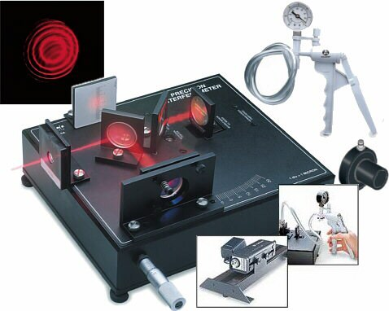

Aplicaciones en sistemas ópticos
Heliostato
Conjunto de espejos que concentran el reflejo de los rayos solares para su uso en sistemas solares como los paneles
Interferómetro
Conjunto de espejos que sirven para desviar u orientar haces de luz por distintos recorridos
Telescopio solar
Los telescopios solares detectan luz cuya longitud de onda puede estar dentro del espectro visible o en sus proximidades